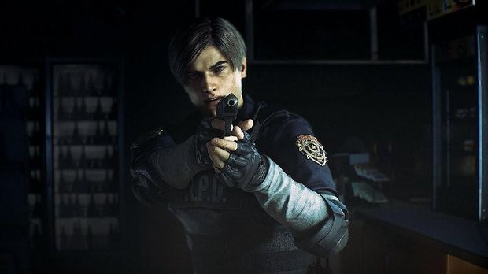
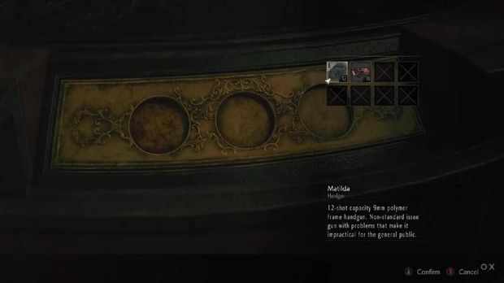
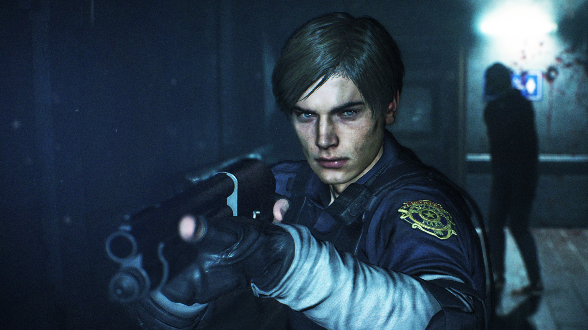
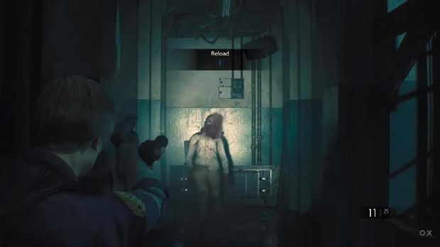
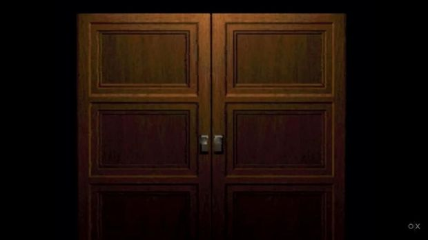

Jakarta - Capcom menghentak ajang Electronic Entertainment Expo (E3) 2018 dengan beragam pengumuman game terbaru, tak ketinggalan Resident Evil 2 Remake. Lewat versi remake ini Capcom ingin kembali mengajak pecinta game horor untuk bernostalgia dengan salah satu seri Resident Evil terbaiknya.
Kini, setelah 20 tahun berlalu Capcom kembali menghadirkan keseruan game tentunya dengan perbaikan di sana-sini. Lalu apa saja yang membedakan versi remake ini dan aslinya? Berikut beberapa perbedaannya!
1. Grafis Lebih Kece

Bicara remake, tentu saja grafis yang ditampilkan pastinya lebih kece dari sebelumnya. Perlu diingat bahwa ini adalah game remake, bukan remaster seperti yang pernah dilakukan Capcom pada Resident Evil 0 HD.
Karenanya, Capcom menggambar ulang tata kota dan lingkungan di dalam game. Tentu saja yang paling ikonik adalah kantor polisi Racoon City, lengkap dengan hall utama yang dihiasi oleh patung.
| Baca Juga : |
|---|
| Fakta tentang Krause : Teman Leon? |
2. Puzzle yang Berbeda

Bagi Anda yang masih ingat akan game Resident Evil 2, tentu akan familiar dengan patung air mancur yang terletak di hall utama. Patung ini merupakan puzzle yang harus dipecahkan oleh pemain di awal game.
Jadi, Anda diharuskan mencari semacam emblem untuk diletakkan di tengah-tengah patung. Bila sudah diletakkan, maka patung akan bergerak maju dan menjatuhkan sebuah kunci, dimana dipakai untuk mengakses pintu.
3. Leon Terlihat Lebih Muda

Dengan grafis yang ala kadarnya pada masa itu, tentu saja wajah karakter tidak begitu terlihat jelas. Namun, di versi remake ini wajah karakter dibuat sangat jelas sehingga ketika tampil di dalam trailer banyak gamer yang kaget Leon tampil dengan wajah yang lebih muda.
Perbandingan ini tentu saja mengacu pada penampilan Leon di Resident Evil 4 (PlayStation 2) dan Resident Evil 6 (PlayStation 3). Memang bila dibadingkan dengan dua judul tadi, Leon di versi remake ini punya wajah yang 'baby face'.
4. Kegelapan yang Mencekam

Di versi asli, tata cahaya di koridor kantor polisi dibuat terang dengan zombi dan segala macam musuh bisa terlihat jelas jika muncul. Nah, sayangnya di versi remake ini Anda harus mempersiapkan mental lebih jauh lagi.
Berdasarkan demo gameplay yang diputar di E3 2018, koridor tempat Leon menyambangi petugas polisi menjadi gelap. Penerangan pun hanya terpancar dari lampu senter yang dibawa oleh Leon. Karenanya, dengan situasi gelap mencekam ini, bermain dengan headphone akan terasa menegangkan.
5. Buka Pintu

Salah satu hal yang ikonik dari seri Resident Evil lawas adalah cara membuka pintu. Baik di seri pertama, kedua, dan ketiga membuka pintu terlihat dramatis dengan latar suara pintu yang mencekam.
Namun, di versi remake ini membuka pintu tidak sama seperti versi original. Anda tinggal menerabas pintu seperti di Resident Evil 7. Kecepatan membuka pintu tergantung dari gerakan.
Source : www.detik.com